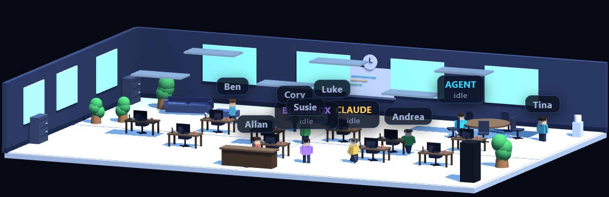
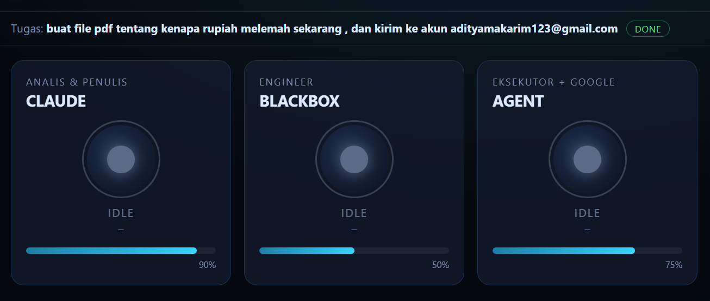

Kantor Multi-Agent adalah eksperimen orkestrasi: alih-alih satu model mengerjakan segalanya, tugas dijalankan oleh sebuah tim AI layaknya kantor kecil. Di pusatnya ada seorang Manajer (manager.py) yang menerima satu perintah, memecahnya jadi bagian-bagian, membagikannya ke pegawai yang tepat, lalu menyintesis semua hasil jadi satu jawaban utuh — kelanjutan dari orkestrator dwi-model di proyek Agent AI Lokal.
Ada tiga pegawai, masing-masing dengan meja & perannya sendiri: CLAUDE sang analis & penulis (dijalankan lewat claude -p), BLACKBOX sang engineer/koder (lewat blackbox -p), dan AGENT sang eksekutor — yaitu router lokal (router.process_message) dengan puluhan tool nyata: file, web, sistem, sampai akses Google. Manajer mengalirkan konteks antar-langkah, jadi keluaran satu pegawai bisa jadi masukan pegawai berikutnya.
Untuk urusan dunia luar, kantor punya identitas sendiri: akun khusus kantorptdims@gmail.com (bukan akun pribadi). Perjalanannya jadi pelajaran keamanan yang nyata — awalnya akses Gmail lewat otomasi browser (Playwright), tapi Google menandainya sebagai aktivitas mencurigakan, sehingga kantor bermigrasi ke Gmail API resmi (OAuth) yang lebih cepat & stabil. Pelajarannya: untuk menyentuh layanan, pintu resmi (API) selalu menang atas jendela (scraping).
Yang bikin kantor ini tak sembarang otomatis: setiap aksi berisiko — mengirim email, menghapus, membayar, memposting — dijaga gerbang human-in-the-loop. Contohnya email: kantor menyusun draf, tapi jari manusia yang menekan Kirim. Kecerdasan penuh, kendali tetap di tangan pemilik.
Kantor ini juga punya wajah. Ada dashboard Control-Room (web): tiga kartu pegawai dengan status & progres real-time, feed aktivitas, dan satu kolom perintah — cukup ketik tugas, tekan Kirim. Ada pula kantor 3D isometrik (Three.js, disimpan lokal/offline-first) tempat para pegawai duduk di mejanya, plus aplikasi suara per-agen berwajah HUD dengan warna khas (Claude coral, BlackBox biru, Agent cyan). Semuanya dikemas jadi satu .exe. Uji nyatanya: diberi tugas “buat analisis mengapa rupiah melemah jadi PDF, lalu kirim” — Manajer membaginya, Claude meriset & menulis, dan kantor menuntaskannya jadi dokumen utuh.


Tiga pegawai AI
Claude (analis & penulis), BlackBox (engineer), Agent (eksekutor + Google) — tiap meja punya peran.
Manajer pembagi tugas
Satu perintah dipecah, dibagikan ke spesialis, lalu hasilnya disintesis jadi jawaban utuh.
Human-in-the-loop
Aksi berisiko (kirim/hapus/bayar/posting) wajib lewat persetujuan manusia — email dibuat draf dulu.
Identitas & API resmi
Akun kantor khusus; migrasi dari otomasi browser ke Gmail API resmi setelah ditandai Google.
Dua wajah: Control-Room & 3D
Dashboard status/progres real-time + kantor 3D isometrik (Three.js offline-first).
Dikemas .exe
Suara per-agen berwajah HUD (warna khas tiap AI), dijalankan lewat satu Kantor PT DIMS.exe.